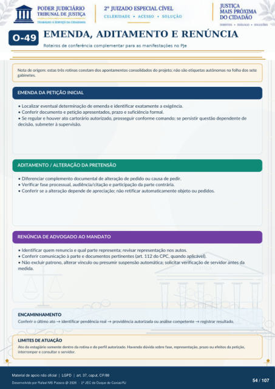

MÓDULO COMPLEMENTAR
EMENDA, ADITAMENTO E RENÚNCIA
Roteiros de conferência complementar para as manifestações no PJe Nota de origem: estas três rotinas constam dos apontamentos consolidados do projeto; não são etiquetas autônomas na folha dos sete gabinetes.
EMENDA DA PETIÇÃO INICIAL
Localizar eventual determinação de emenda e identificar exatamente a exigência.
Conferir documento e petição apresentados, prazo e suficiência formal.
Se regular e houver ato cartorário autorizado, prosseguir conforme comando; se persistir questão dependente de
decisão, submeter à supervisão.
ADITAMENTO / ALTERAÇÃO DA PRETENSÃO
Diferenciar complemento documental de alteração de pedido ou causa de pedir.
Verificar fase processual, audiência/citação e participação da parte contrária.
Conferir se a alteração depende de apreciação; não retificar automaticamente objeto ou pedidos.
RENÚNCIA DE ADVOGADO AO MANDATO
Identificar quem renuncia e qual parte representa; revisar representação nos autos.
Conferir comunicação à parte e documentos pertinentes (art. 112 do CPC, quando aplicável).
Não excluir patrono, alterar vínculo ou presumir suspensão automática; solicitar verificação de servidor antes da
medida.
ENCAMINHAMENTO
Conferir o último ato · identificar pendência real · providência autorizada ou análise competente · registrar resultado.
LIMITES DE ATUAÇÃO
Ato do estagiário somente dentro da rotina e do perfil autorizado. Havendo dúvida sobre fase, representação, prazo ou efeitos da petição, interromper e consultar o servidor.
Ver também o infográfico original (página 54)
